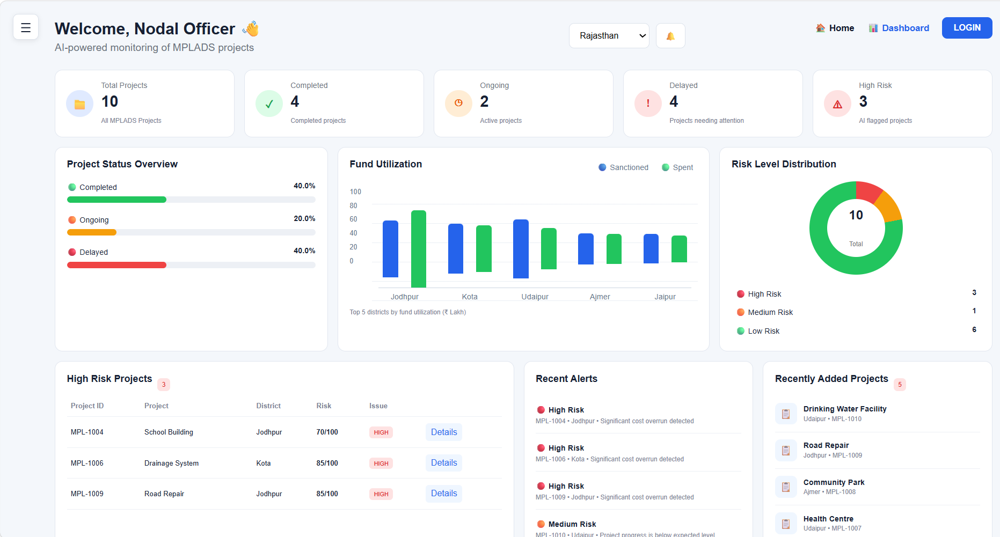

MPLADS AI MONITOR
Smart Monitoring • Transparent Governance
Smart Monitoring • Transparent Governance

Monitor project progress, ensure transparent utilization of funds, detect anomalies and generate intelligent reports in real time.
Guidance and leadership driving transparent governance
Government of India
Government of India
MoSPI
Monitoring & Implementation
MPLADS AI Monitor is an intelligent monitoring platform designed to bring transparency, accountability and efficiency to the implementation of MPLADS projects across India.

Intelligent tools for smarter MPLADS monitoring
Track project progress and status in real time across all districts.
Identify delays, cost overruns and anomalies using intelligent analysis.
Monitor fund allocation and utilization with clear analytics.
Detailed district-wise analytics and trend visualization.
Generate detailed monitoring reports and export results.
View project locations and distribution on interactive maps.
Projects Monitored
Across IndiaCompleted Projects
Successfully DeliveredMonitoring Accuracy
AI Driven InsightsHigh-Risk Projects
Actively Monitored